Your weapons are built like hero gear in a game. Your armour is six flat skins on vanilla's boxes. This plan builds armour the way the weapons were built: real parts you can see from the side, nine materials you can tell apart, glow that means something, cloth that moves, and sound that matches what it is made of. Every stat, recipe and set bonus stays exactly as it is.
Added after your three replies (more sets and clothes, then "clean, not glitchy", then three styles and two faults).
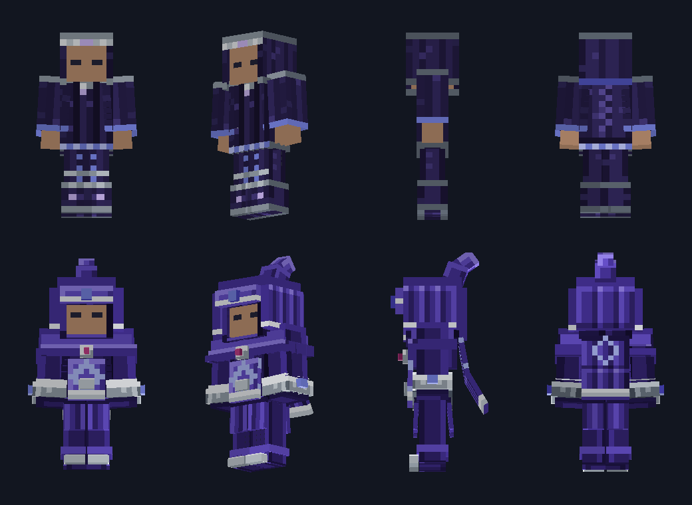
You were right. The weapons had a checker that fails a model whose faces share a plane, and my armour sets never did. I wrote one: it poses a set at rest and mid-stride, then reports faces fighting on one plane (the vertical stripes in your crops) and boxes passing through each other (the green and white boxes in the Briarguard crop). Run on the sets you saw, it found 14 to 48 problems in every set, and up to 65 in a look.
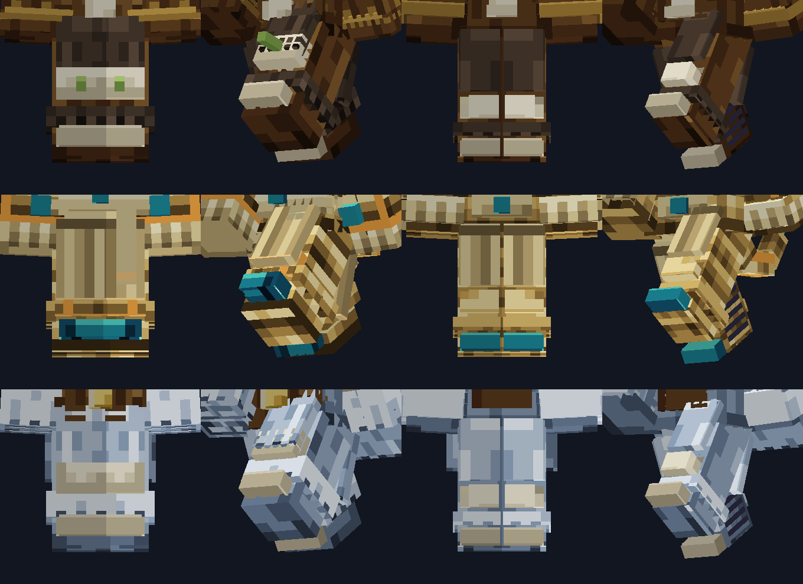
Left and right thigh panels shared a plane in the middle. The two boot cuffs overlapped by 3 pixels. A belt, sash, tails, skirt, knee plate and cuff all hung in the same band. Belts and arm cuffs fought for the hips. Some plates started exactly on the shell's plane, and a spike pierced a plate instead of standing on it.
One hero per zone, with supports that never share its space. Lanes: every limb's height is cut into bands, one piece each, with a gap. Left and right never touch. No flush edges. Stacks step outward. Cloth is thin and hangs outside. Plant a spike, never pierce. Small details are painted, not modelled.
A set or garment that shares a plane or passes through another part cannot ship. Your approval sheet gets one more page: the hips to the boots, standing and mid-stride, for every set, because that is where the glitches were.
| Set | Boxes | Problems found |
|---|---|---|
| Veilwoven | 43 to 35 | 19 to 0 |
| Gatewrought | 41 to 33 | 48 to 0 |
| Briarguard | 53 to 43 | 18 to 0 |
| Wyrmscale | 49 to 42 | 14 to 0 |
| Antlerhold | 48 to 41 | 22 to 0 |
| The four looks (armed, travelling, wayfarer, off duty) | 41, 49, 54, 25 to 33, 38, 43, 26 | 48, 65, 61, 4 to 0, 0, 0, 0 |
Not simpler: the tusks, antlers, fins, tail, cape and stacked pauldrons are all still there, in 7 to 10 fewer boxes a set, with the bands visible. What the checker cannot tell me is whether it is beautiful (that is your sheet), whether a texture reads as noise (I calmed the scale and fur patterns and they still need your eye), and what a full sprint does to hanging panels (looked at by eye, with a clamp as the fix).
The eyes. The brown set was Briarguard. Only the cloth and plate sets ever cut the face opening in the helm, so the fur, scale and studded sets covered the face, and I had removed the green glints that stood in for eyes. Every material now cuts the opening, and a new check fails any set whose eyes or mouth are covered. The blue fins. They were tilted boxes sitting on the cap by an edge, and my overlap checker never asked whether a part was fastened to anything. Now every crystal, horn, fin, tusk and gem has a setting it grows from (the Wyrmscale's three crystals stand in a brass crown mount), and two new checks fail anything that touches by a corner. On the sets as they stood, 26 parts failed that test.
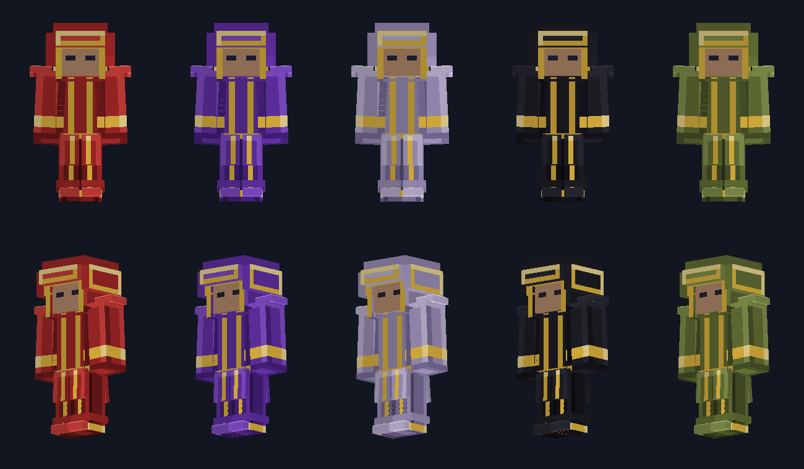
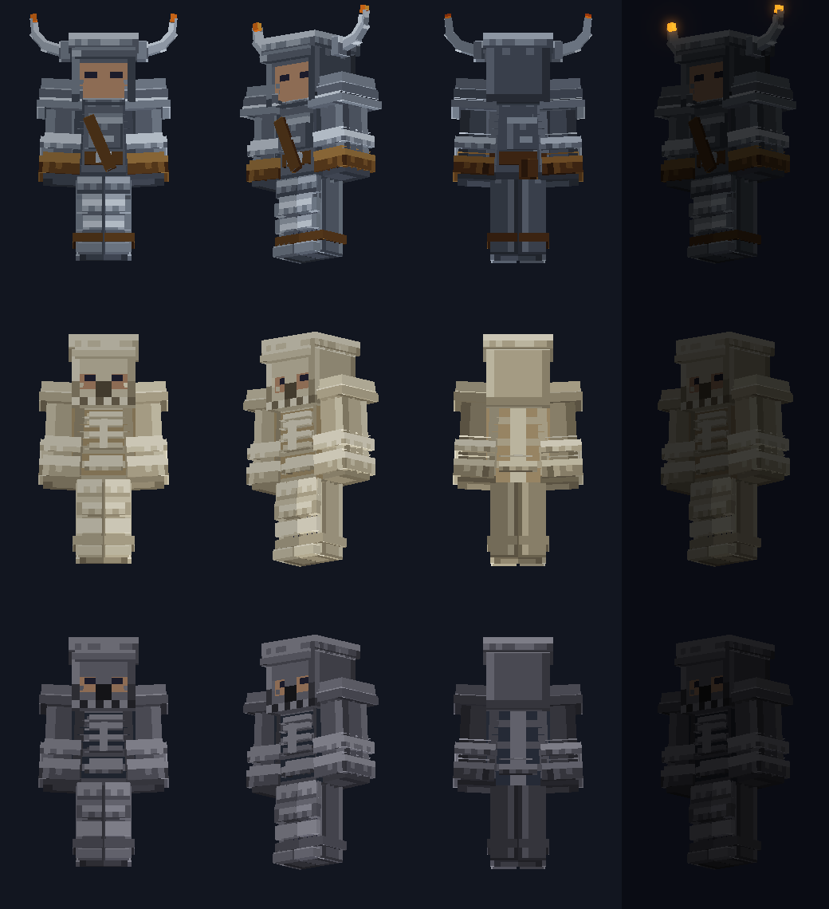
The Adept look at every rank: Hedgerobe at E (quartz), Mothcap at D (Mother of Spores), Inkbound at C, Rimeprayer and Veilwoven at B, Haloweave at A, Sovereign Weave at S. You wear the colours you have attuned.
The bandolier, a horned crown, a skull mask and epaulettes become garments any set can wear, in the Wardrobe.
E's recipe takes bone, flint or quartz. Each now picks a house, so no new land drop is needed for launch. The land houses (Mossrunner, Dunewrap, Frostfur) are the second wave.
| Weapons (Arms) | Armour today (Gear) | |
|---|---|---|
| Time | about 35 hours, 61 commits | about 3.5 hours, 3 commits, two days before the weapon style existed |
| Code | about 8,500 lines of Java and 8,900 of art tools | about 2,300 and 2,200 |
| Shapes | 111 voxel models in your reference style | six vanilla boxes a set; Lordscale and Sovereign add 20 and 17 that never move |
| Light | its own shader: painted light, metal sheen, glow that runs along the blade | vanilla light |
| Sound | 26 events, about 80 layered, loudness-checked files | vanilla equip clicks |
| Motion | baked swings, wrists, holds | nothing moves |
| Review | a sheet beside your reference every batch, audits, a listening page | one preview image, never checked against the reference |
| Rework | you rejected two passes before the third landed | none |
The weapons are not perfect. In third person, 39 of 89 moves still put some of the hilt or haft into the body. A Wildhide and a Sovereign Longsword sound alike. Nothing is drawn on the body when a weapon is stowed. Named weapons are not built yet. The full review is in the plan.
Taken from the weapon style and written as rules a builder can test.
The body shell, then plates and folds one or two texels proud, then horns, gems and crests two to four proud. Stacked plates step out at different depths.
Each tier has its own shape. A check renders every set in black from three sides and fails if two overlap too much.
A one-texel lit edge up and left, a dark one down and right, contact shadows at joins, three or four colour ramps per piece. No noise.
Runes, gems, thread and eyes only. It rises as more of the set is on, and only the top tiers shed embers, like the weapons.
Hoods, capes, sashes and tassets hang from a pivot and trail the body. Plates stay rigid. Long cloth is two or three links so it bends.
Silk, hide, mail, plate, scale and glass each sound like themselves, quietly, one sound per material instead of one per piece.
I built two sets to the rules, Veilwoven (cloth and silver) and Gatewrought (plate and brass), with the renderer the repo already has. Each is a hand-written list of boxes with a painter per material.
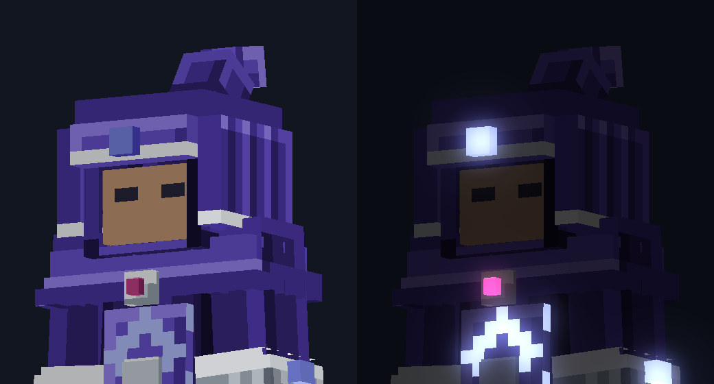
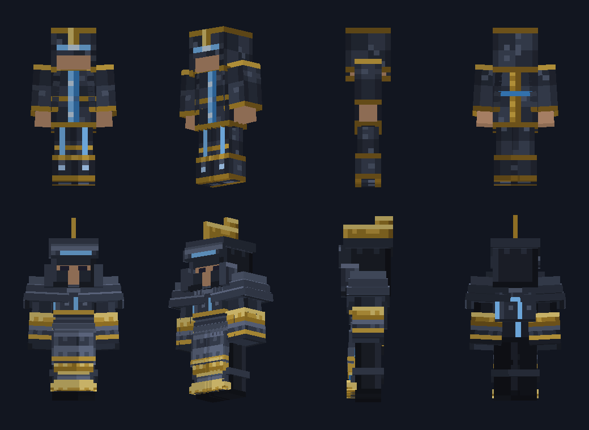
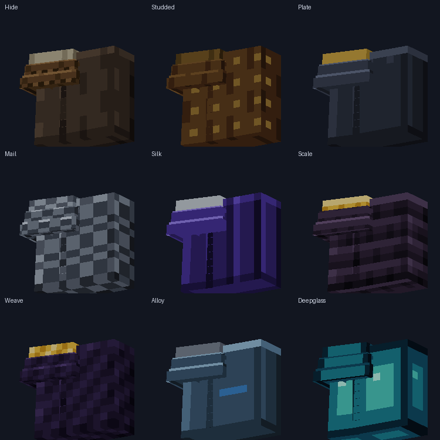
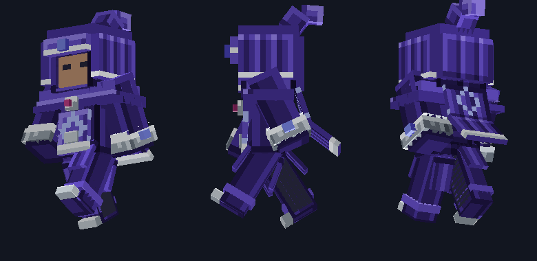
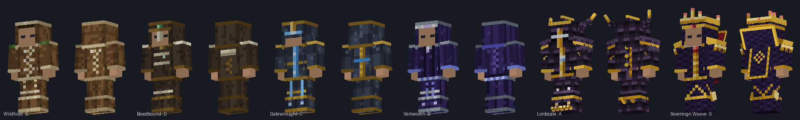
What this proof does and doesn't show.
These are the plain version of each rank, made from any Part, and the base the houses sit on. Names, stats and set bonuses stay as they are.
| Set | The idea and its shape | Materials and glow | Its set bonus, made visible |
|---|---|---|---|
| EWildhide | A hunter's hide kit with a lantern. A deep fur-trimmed hood, bone toggles, fringe at sleeves and hem. | Hide, bone, sinew. Glow: only the amber lantern, flickering. | Hunter's Sense: the hackles rise and the hood's eyes glint amber while it is on. |
| DBeastbound | It wears the trophy you hunted: the tusk, antler or scale you used sits on the shoulders. Bronze collar, skull belt clasp. | Studded leather, bronze, bone, moss. A few green spore dots. | Cornered: the trophy and eyes warm to ember below half health, and breath steams. |
| CGatewrought | Gate-slate plate. Square, stacked pauldrons, a crested great helm, tassets, a gate-blue surcoat. | Plate, brass. Signal-blue runes that pulse in order up the body. | A power hit primes the next blow: the runes flare in the Force's colour and run to your weapon hand. |
| BVeilwoven | The Veil's weavers. A deep hood with a curling peak, a two-layer capelet, a sash, a back cape with a sigil, robe panels split at the front. | Silk, mirror silver, spirit glass, thread. The most cloth of any set. | Veil Flicker: you flicker for a frame and leave an afterimage as the hit passes through. |
| ALordscale | The Lords' black scale and molten gold. Horns, a crest, three-layer spiked pauldrons, a spined back, talons (kept and deepened). | Scale, gold, pearl. Gold edges shed embers. | Overflow: the scales flare gold on every fifth power hit, and a ring bursts at the target. |
| SSovereign Weave | The Hollow Court's regalia. A crown of spires, a standing collar, disc pauldrons, a long multi-link cape, ankle fins (kept and deepened). | Void weave, gold filigree, crimson. Radiant gold in the Sovereign form. | Sovereign's Measure: the crown's centre gem takes the colour of your highest stat. |
| +Precursor Frame | Hard-light alloy panels and a visor. | Alloy, Deepglass. | Each module shows: Jet Boots vent, the Shield Emitter's disc deploys, Stealth shimmers. |
The game already has the variety. Every rank's recipe takes the trophies of real creatures: three named beasts and five Lords at D, four Lords at C, five at B, five at A, about nine at S. Today they all make the same set. In this plan the Part you spend picks the look. Beat the Dune Wyrm and spend its scale, and you get the Wyrmscale set. The ordinary recipe still takes any Part and gives the plain set, so nobody is ever locked out, and no rank asks for a second trophy.
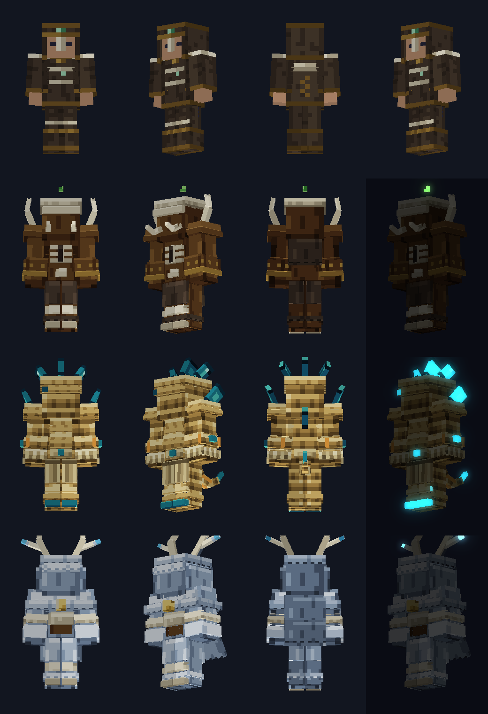
Bonewright (bone): white skeleton armour, a skull whose sockets show your eyes, a rib cuirass.
Flintguard (flint): the same skeleton in black.
Hedgerobe (quartz): a trimmed hooded robe in a Force colour.
Later: the three land houses, Mossrunner, Dunewrap, Frostfur.
Briarguard (Briar Tusk): boar-skull helm, rib cuirass, tusks.
Wyrmscale (Wyrm Scale): sand scales, glass fins, a tail.
Antlerhold (Antler Tine): antler crown, frost fur, a bell.
Ironhorn (Tyrant's Crown): white steel, a horned helm, a bandolier.
Later: Tollguard, Mothcap (a robe), Hivecarapace, Heartwood.
Gearwright (Colossus Gear): brass clockwork plate, turning gears, steam vents.
Inkbound (Archivist's Quill): scholar's robe, a chained book, loose pages.
Gilded (Broker's Lantern): long coat, hook lantern, coin chains.
Rimeprayer (Abbot's Prayer Beads): white and ice-blue monk's robes.
Mirrorguard (Mirror Shard Crown): polished mirror plate that flashes.
Zeroframe (Zero Core): white tech plating, a red countdown on the chest.
Skyfin (Leviathan Fin): pearl-blue fin blades, trailing wind ribbons.
Haloweave (Herald's Halo): gold-white robes, a halo ring turning behind the head.
Forgeheart (Furnace Engine Core): a molten chest, vents that blast.
Keywright (Architect's Key): blueprint-line armour, small cubes that assemble around you.
Stormcrown (Storm Core): storm-grey plate, a crown of rods with arcs between.
Nightshroud (Regent's Shadow): a star-field cloak that turns to shadow.
The weapons gave you strike, guard and dodge. Each house reacts to one of them, once, with no new numbers. Six houses in each group, so every style of play has gear that answers it.
| Reaction | When | What the armour does |
|---|---|---|
| Hold | a deflect, a block, a guard break | plates flash and ring, thorns bloom, vents blast, a frost ring spreads |
| Slip | a dodge, a perfect dodge, a slide | the cloak flares and leaves an afterimage, the tail whips, ribbons trail |
| Cast | a power, a full-charge heavy, the Art | rings, pages or cubes answer, antlers and crowns light |
Mixing is fine: a Briarguard helm over a Wyrmscale chest still counts toward the Beastbound set bonus. Every house is a spec file and its textures, so more can be added later like a weapon batch. Rename any of them freely, the lore names are mine.
The player has no cloak slot, and I don't want to add one. So clothing is three looks for every piece you wear and six slots of garments that sit on any set.
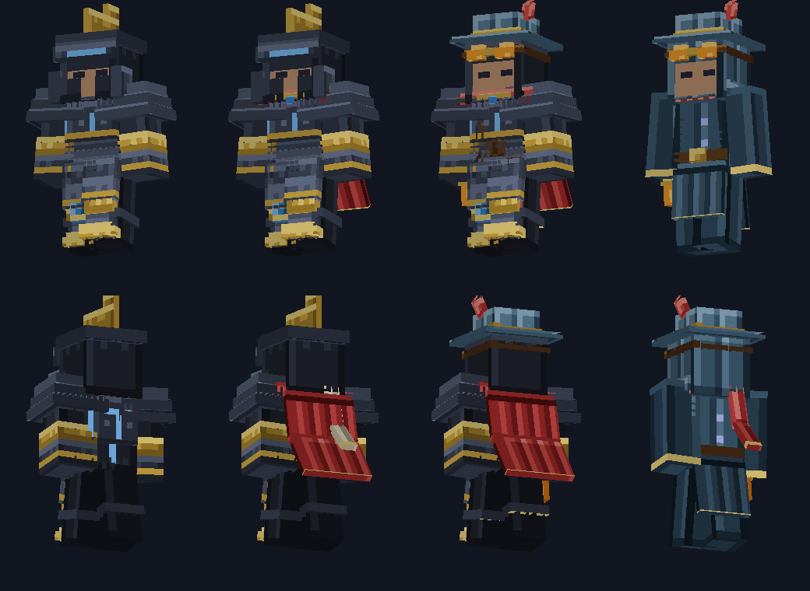
Armed: the full armour. Travelling: only the soft parts, cloaks, scarves, hoods, sashes. Off duty: a coat and no glow, for the city. One page sets it for everything you wear. An option switches it on by itself in safe ground.
Head: hood up or down, traveller's hat, antler crown, half mask, beaked mask, goggles, veil, halo ring. Neck: long scarf, fur ruff, mantle, high collar, bell cord. Back: short, long and ragged cloaks, bedroll, quiver, scroll case. Waist: sash, pouch belt, tabard, hanging lantern, key ring. Hands: gloves, wraps, bracers, rings. Feet: spats, boot cuffs, anklet bells.
A Tailor at the Hearth sells the common ones. The first time you down a Gate Lord you get one garment in its style (15 of them): the Bell Warden's hood, the Mirror Knight's plume, the Sleeper's veil. A few more wait at stands, smiths and quests. They are unlocks, not items, so no clutter.
Your last weapon rides on your back or hip when it is not in your hand. The weapon review found that nothing is drawn on the body today. This needs a short check first, with a plain fallback.
Everyone sees your look and garments because they are written on the piece, which the game already syncs. Unlocks are per player and kept through death. Guild colours and emblems become one more field later. Any money, if it ever comes, can only touch this layer, never a stat.
Effects, animation and uses, none of which change a number.
A short fastening beat and a sound for the material: plates settle, silk lifts.
Once only: a line from the System and a one-second flourish. Then the set stays quiet. Two pieces give a smaller glint.
Cornered, a primed strike, Veil Flicker and Overflow are visible to players within 48 blocks through a 5-byte message. The numbers stay on the server.
In first person your arm wears the sleeve and vambrace of the chest piece, in the same material and glow.
Runes brighten toward a gate or rift you have found, gems toward a spirit, and Lordscale hums near a Lord's floor. Hints only, from what the Atlas already shows.
An Appearance page: hood up or down, cape on or off, glow low or normal. Saved on the piece, so everyone sees it. Later: dyeable cloth.
A Beastbound set shows the trophy it was made from, and a hide's land colours the hood: a mossy Greenwild one, a white Frostwild one.
Armour stands and the Trophy Hall show the full set with its effects, because they use the same drawing path.
A piece looks new, scuffed or battered by its durability, so repairing it is something you can see.
| Phase | What | Builder time | Gate |
|---|---|---|---|
| 0 The kit | The part painter, packer, the overlap checker and lane helpers, and review sheet from the proof; the house marker and the recipe generator; models for all four slots. | 5 to 6 h | The sheet renders, checks pass, zero overlaps |
| 1a Six default sets | E to S, four pieces each, glow, icons, the Frame. | 3 to 4 h | |
| 1b House wave 1 | One house a rank: Mossrunner, Briarguard, Gearwright, Rimeprayer, Skyfin, Keywright. | 3 to 4 h | You approve a sheet of the twelve sets, with a hips-to-boots strip for each |
| 2 Light and motion | Glow layer, cloth and distance levels, first-person sleeve, the verb reactions, the 60-stand test. | 3 to 4 h | Cost test, a look tour |
| 3 Sound and words | The sound kit and listening page, set moments, tooltips and the Armour tab with house chips. | 3 to 4 h | You listen and read |
| 4 Uses | Appearance page, wear states, tells, the Frame's modules, dyeable cloth. | 2 to 3 h | Tests, a short tour |
| 5 House wave 2 | The other twelve houses, beside phases 2 to 4 with a second builder. | 5 to 7 h | A sheet per batch |
| 6 The Wardrobe | Three looks, 48 garments in two batches, the Tailor and unlock page, Lord and found garments, the stowed-weapon check. | 8 to 10 h | A sheet, a tour |
| 7 Later, as data | More houses (about 34 in all), guild emblems, an armour shader, Raise. | open | Its own plan |
About 33 to 43 builder hours for everything, about two days of wall clock with three builders, scaled from the git history (all of AWAKEN took about 30 hours; a weapon batch of 24 to 42 took 20 to 40 minutes). Every wave ships on its own, so you can stop after any of them and keep a working game. What doesn't compress: CI runs, your look gates (one per wave), and the Mac's single perf slot.
Every one has a recommended answer. "Yes to all" is a fine reply. 3 and 11 are replaced by 17 and 18; 28 to 39 are new.
| # | Decision | Recommended | Why |
|---|---|---|---|
| 1 | Build armour as parts, glow, cloth and sound in vanilla's armour path, for all six tiers and the Frame | Yes | Every piece has a working precedent in the repo, no mixins, the proof shows the look |
| 2 | You approve a sheet of all six sets, beside the weapons, before anything is wired in | Yes | You rejected the weapons twice on look; this protects your time |
| 3 | n/a | You asked for more than one set per rank | |
| 4 | Glow carries information; E has only its lantern | Yes | Keeps light a reward, like the weapons, and crowds readable |
| 5 | Cloth moves: client only, the nearest 32 wearers, off with distance, halved by reduced motion | Yes | The biggest "alive" win for little cost |
| 6 | A completed set is a moment (one System line, a one-second flourish), and bonus moments are visible to others | Yes | Makes the bonus felt; a 5-byte cosmetic message |
| 7 | First-person armour on your arm | Yes | Most of your screen time is your own arm |
| 8 | An armour sound kit by material, quiet by design | Yes | Gear is silent today |
| 9 | Armour tells: runes toward a gate or rift, gems toward a spirit, a hum near a Lord's floor | Yes, small | A use with no stats; points only at what the Atlas shows |
| 10 | An Appearance page (hood, cape, glow) saved on the piece | Yes | Clothing you wear your way; the hook for cosmetics later |
| 11 | n/a | Houses do the same job far better | |
| 12 | Ask the Arms planner to have Hale also hand a plain Hunter's Coat with the first weapon | Yes | The first hour looks like a hunter's; it is their file to change |
| 13 | The Frame's modules show on the suit | Yes | Feedback for something you pay essence for |
| 14 | Stands and the Hall show full effects; mobs wearing sets wait | Yes | Free from the drawing path |
| 15 | Phase 5 options (shader, cuts, Marked armour) only after you have seen Phase 2 | Yes | Cost and taste both want evidence first |
| 16 | Order: Phases 0 and 1 now (art only), 2 after you approve the sheet, 3 after arms-progression A and C | Yes | No file conflict with the other plans |
| 17 | Houses: the six default sets plus three houses a rank at launch (24 sets), and every other Lord, beast and Court Part becomes a house later as data (about 34) | Yes | Content the game already has; each house is a named hunt |
| 18 | The Part you spend picks the house. The plain recipe still takes any Part, so nobody is locked out and no rank needs a second trophy | Yes | Choice without grind or a new crafting screen |
| 19 | Houses are look and reaction only at launch: the tier's numbers, mixing still counts. Equal-worth sidegrade bonuses only after a sim row | Yes, no sidegrades now | Keeps the combat sim, the difficulty stance and every test |
| 20 | Houses react to your verbs: Hold, Slip, Cast, six houses each | Yes | Real uses with no new numbers; every playstyle has gear that answers it |
| 21 | Three looks for every worn piece: Armed, Travelling, Off duty, with an optional automatic Off duty in safe ground (default off) | Yes | Clothes for the city, cheap, same stats |
| 22 | Garments in six slots, about 48 at launch in two batches, unlocked per player and shown through the piece | Yes | "Cool clothes" with no new equipment slot |
| 23 | A Tailor at the Hearth, a garment from the first kill of each Gate Lord (15), and found garments; never in a chest | Yes | Garments you earn from the hunt, once per claim |
| 24 | A stowed weapon on your back or hip (a short check first, with a fallback) | Yes | Fixes a gap the weapon review found |
| 25 | Raise carries a house up a tier, once the arms plan's Raise exists | Yes, later | Lets you stay in your look from E to S |
| 26 | The names are my proposals: rename any house or garment | Yes | The lore names are mine |
| 27 | Order: the defaults plus one house a rank first, you approve the sheet, then wave 2 and the Wardrobe beside light and motion | Yes | No wave is built on a look you have not seen |
| 28 | Adopt the lane rules and the overlap checker as a gate: a set or garment that shares a plane or passes through another part cannot ship | Yes | The weapons have this gate; the armour needed it, and it is already written |
| 29 | Your approval sheet shows hips to boots, standing and mid-stride, for every set, beside the full figures | Yes | The glitches were at the hips, legs and boots |
| 30 | The trim-robe look is the Adept look at every rank, coloured by the five Forces (a palette swap), with Hedgerobe (E) and Mothcap (D) added | Yes | One design, five colours, matched to the Forge's catalysts |
| 31 | Ironhorn is a D house (the Ember Tyrant's Part); the bandolier, horns and skull mask become garments | Yes | White steel is D's metal; the references become reusable clothes |
| 32 | E's houses are picked by its three Parts: bone, flint, quartz; the land houses become wave 2 | Yes | Uses items that exist; two skeletons from one model |
| 33 | The face always shows, and everything that sticks out is fastened: two more checks in the gate | Yes | The two faults you found, now impossible to ship |
| 34 | Robe colours follow the Force catalyst in the Binding slot, and you wear the colours you have attuned | Yes | Ties armour to attunement, which weapons already use |
| 35 | The test's hero set is Veilwoven (cloth, metal, glass, a cape), not Wyrmscale | Veilwoven | Shows what each level does to every material |
| 36 | Staged: first sheet is Level 1 beside Level 2; Level 3 only if you want it, or both at once with two builders | Staged | Level 2 is cheap and likely the big step; Level 3 is the costly, uncertain one |
| 37 | The test lives on its own branch and is never merged; only reviewed parts are cherry-picked | Yes | A spike must not leave half-finished code in the mod |
| 38 | If Level 2 wins, the armour shader moves from phase 5 to phase 2, with the weapons' fallback | Yes | The largest single quality step, already proven in the repo |
| 39 | You judge on the CI sheet; a Mac film of the cape moving only if you ask | Yes | CI frames are poses; a film costs one perf-slot tour |